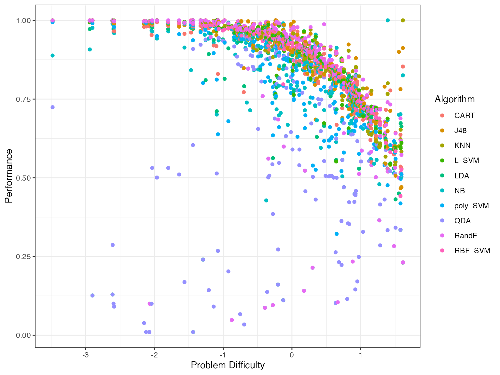
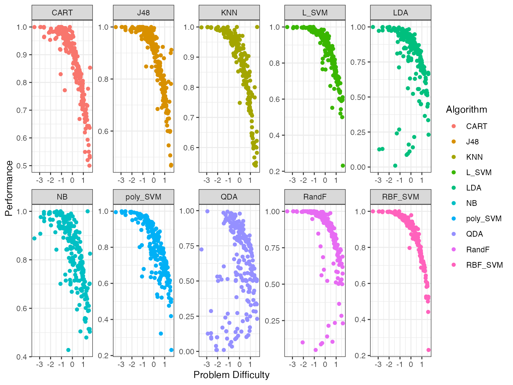
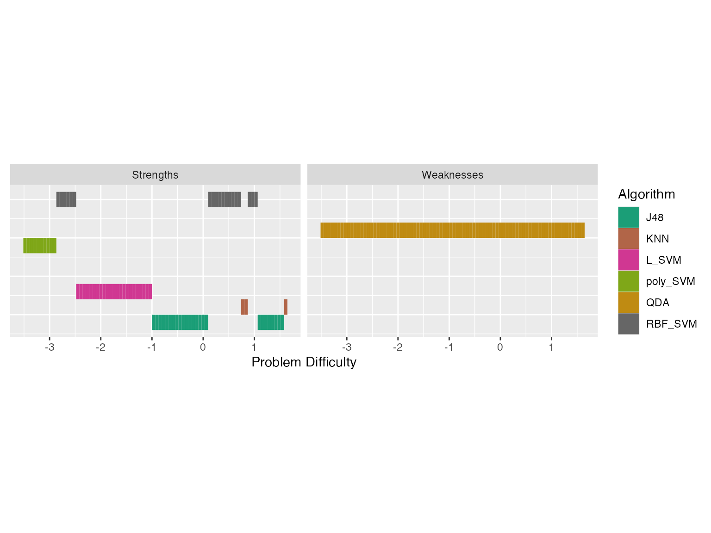
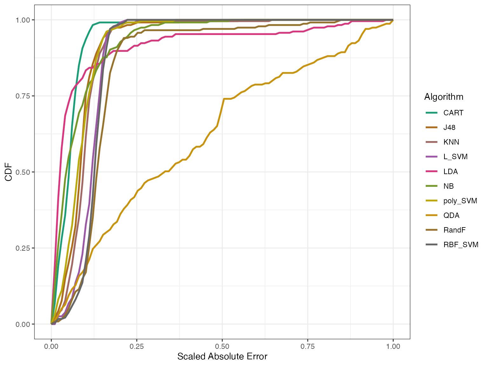
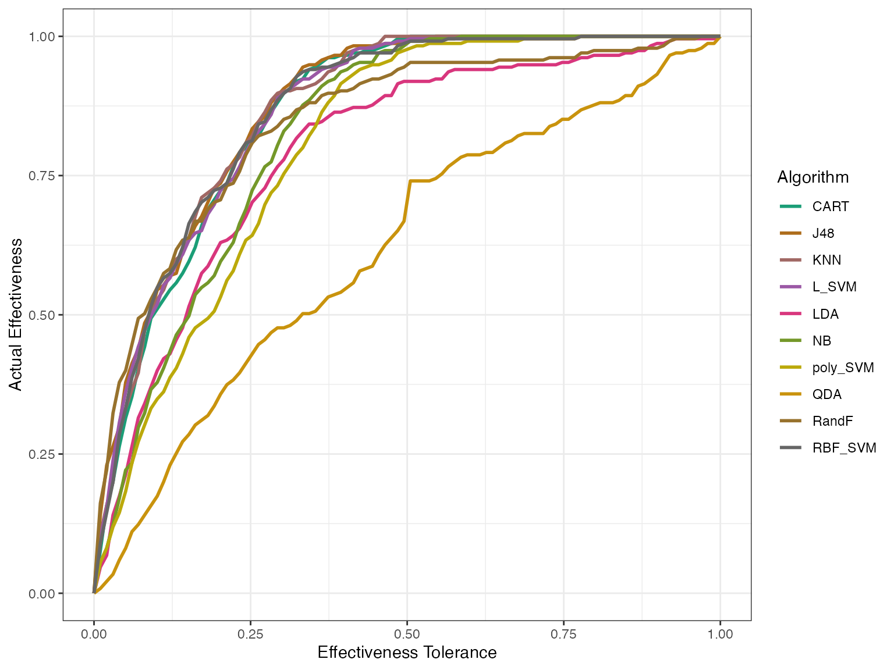
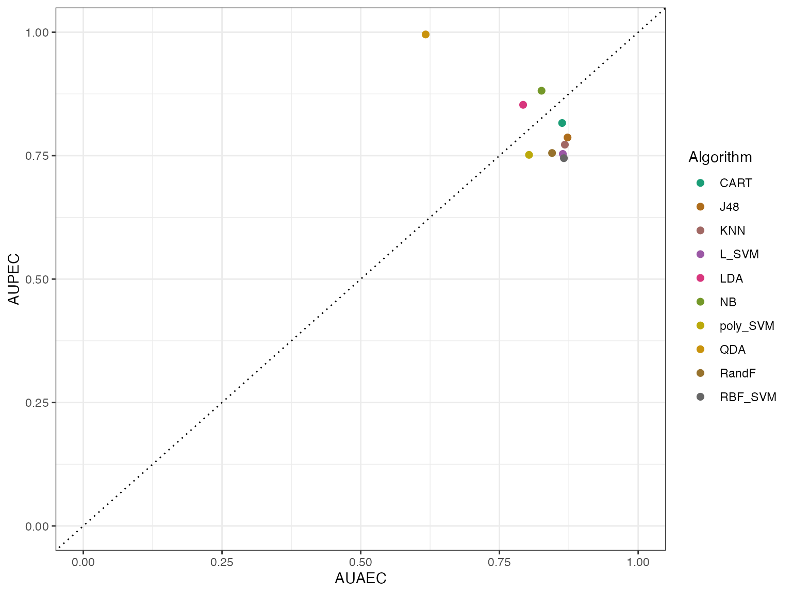
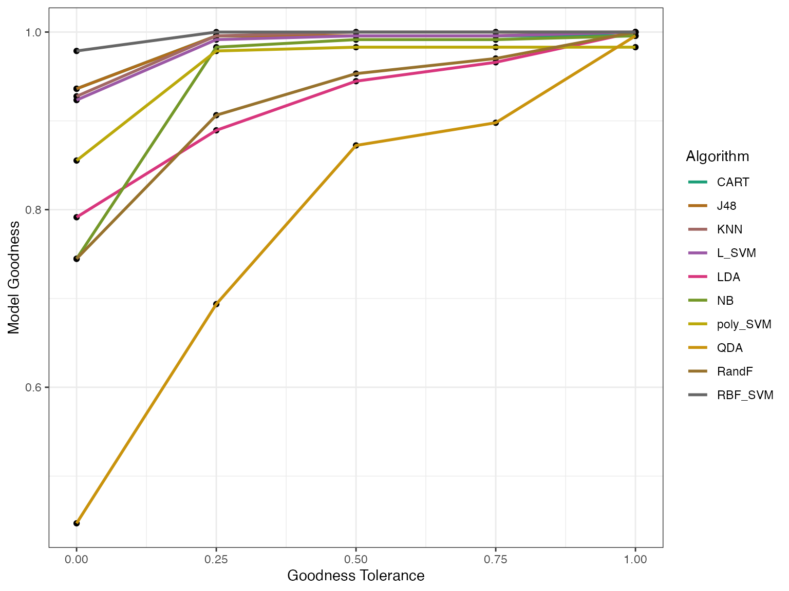

Introduction to airt
airt.RmdThe goal of airt is to evaluate the performance of a portfolio of algorithms using Item Response Theory (IRT). The IRT models are fitted using the R packages EstCRM and mirt. The function in EstCRM is slightly modified to account for a broader set of parameters.
Classification Algorithms
This example is on classification algorithms. The data classification has performance data from 10 classification algorithms on 235 datasets. This data is discussed in (Muñoz et al. 2018) and can be found at the test instance library MATILDA (Smith-Miles 2019). Let’s have a look at this dataset.
data("classification_cts")
df <- classification_cts
head(df)
#> NB LDA QDA CART J48 KNN L_SVM
#> 1 0.7199042 0.7602850 0.7459878 0.7546605 0.7435086 0.7430308 0.7694158
#> 2 0.8358182 0.8404234 0.1045281 0.8270254 0.8347175 0.8328870 0.8284820
#> 3 0.8581818 0.8763636 0.8300000 0.8372727 0.8672727 0.8218182 0.8763636
#> 4 0.7467141 0.7356707 0.4451558 0.7356707 0.7356707 0.7530488 0.7356707
#> 5 0.9650329 0.1408706 0.1408706 0.9397915 0.9619915 0.9277021 0.9647557
#> 6 0.7739130 0.8536232 0.5060660 0.8536232 0.8507246 0.8391304 0.8521739
#> poly_SVM RBF_SVM RandF
#> 1 0.7225890 0.7788021 0.7655677
#> 2 0.8212273 0.8300809 0.1045281
#> 3 0.8763636 0.8672727 0.8672727
#> 4 0.7704268 0.7685976 0.7557249
#> 5 0.7341198 0.8483237 0.1408706
#> 6 0.8579710 0.8521739 0.8637681In this dataset the columns represent algorithms and rows represent datasets/instances. The values are performance values. That is, the performance of dataset1 to algorithm Naive Bayes (NB) is 0.7199042. This dataframe is the input to our AIRT model. We fit it by calling cirtmodel.
Fitting a Continuous IRT Model to Algorithm Performance Data
modout <- cirtmodel(df)Now the model is fitted. Let’s have a look at traditional IRT parameters.
paras <- modout$model$param
paras
#> a b alpha
#> NB 1.027368059 -1.1185870 1.05927334
#> LDA 0.697568059 -1.9584262 0.94906831
#> QDA 0.008604556 -37.6665493 0.01731587
#> CART 1.598441089 -1.0209521 1.41547455
#> J48 1.558295477 -1.1640940 1.52036690
#> KNN 1.796892905 -0.8412235 1.64579669
#> L_SVM 2.846510834 -1.4371875 1.50572702
#> poly_SVM 1.743909296 -1.1499008 1.31318614
#> RBF_SVM 3.766472502 -1.4019959 1.53615811
#> RandF 0.999442464 -1.7509568 1.43550771The parameter a denotes discrimination, b denotes difficulty and alpha is a scaling parameter. These are traditional IRT parameters. Using these parameters we will find AIRT algorithm attributes. These are algorithm anomalousness, consistency and the difficulty limit.
If an algorithm is anomalous then the anomalous indicator is 1. In this algorithm portfolio, none of the algorithms are anomalous, because all anomalous indicators are 0. Anomalous algorithms give good performances for difficult problems and poor performances for easy problems.
The difficulty limit gives the highest difficulty level that algorithms can handle. In this scenario, QDA has the highest difficulty limit. So, QDA can handle the hardest problems. KNN has the lowest difficulty limit. It can only handle very easy problems.
Algorithm consistency attribute gives how consistent an algorithm is. An algorithm can be consistently good for most of the problems or it can be consistently poor for many problems. And many algorithms can vary in their performance depending on the problem/dataset. In this portfolio, QDA is the most consistent algorithm.
Let’s look at these algorithms visually. The heatmaps_crm function plots the heatmaps. The part crm stands for continuous response model.
obj <- heatmaps_crm(modout)
autoplot(obj) Let’s discuss these heatmaps. Theta (x axis) represents the dataset
easiness and z (y axis) represents the normalized performance values.
The heatmaps show the probability density of the fitted IRT model over
Theta and z values for each algorithm.
Let’s discuss these heatmaps. Theta (x axis) represents the dataset
easiness and z (y axis) represents the normalized performance values.
The heatmaps show the probability density of the fitted IRT model over
Theta and z values for each algorithm.
Apart from QDA all heatmaps have a line (a bit like a lightsaber) going through it. If the lightsaber has a positive slope, then the algorithm is not anomalous. We see some lightsabers are sharper than others. Algorithms with sharper lightsabers are more discriminating. The algorithms with no lightsabers (QDA) or blurry lightsabers are more consistent. In this portfolio, QDA is the most consistent as it doesn’t have any lightsabers. LDA and NB are also somewhat consistent. RBF_SVM is the least consistent (most discriminating) as it has a very sharp line.
The Problem Difficulty Space and Algorithm Performance
We can also look at the algorithm performance with respect to the dataset difficulty. This is called the latent trait analysis. The function latent_trait_analysis does this for you. We need to pass the IRT parameters to do this analysis.
obj <- latent_trait_analysis(df, modout$model$param, epsilon = 0 )
#> Joining with `by = join_by(group)`
#> Joining with `by = join_by(group)`
autoplot(obj, plottype = 1)
When you use plottype = 1, it plots all algorithms in a single plot. To have a separate plot for each algorithm we use plottype = 2.
autoplot(obj, plottype = 2) From these plots we see that certain algorithms give better performances for different problem difficulty values. To get a better sense of which algorithms are better for which difficulty values we fit smoothing splines to the above data. By using plottype = 3 in autoplot we can see these smoothing splines.
autoplot(obj, plottype = 3)Strengths and Weaknesses of Algorithms
From this plot, we can get the best algorithm for a given problem difficulty. We can use these splines to compute the proportion of the latent trait spectrum occupied by each algorithm. We call this the latent trait occupancy (LTO). These are strengths of algorithms.
obj$strengths$proportions
#> # A tibble: 5 × 4
#> group Proportion algorithm colour
#> <dbl> <dbl> <chr> <chr>
#> 1 2 0.362 J48 #D89000
#> 2 4 0.294 L_SVM #39B600
#> 3 10 0.221 RBF_SVM #FF62BC
#> 4 3 0.115 KNN #A3A500
#> 5 7 0.00851 poly_SVM #00B0F6The column Proportion gives the latent trait occupancy of the algorithm. In this scenario, J48 has the highest latent trait occupancy.
Similar to strengths, we can say an algorithm is weak if it has the lowest performance for a given difficulty.
obj$weakness$proportions
#> # A tibble: 2 × 4
#> group Proportion algorithm colour
#> <dbl> <dbl> <chr> <chr>
#> 1 8 0.996 QDA #9590FF
#> 2 10 0.00426 RBF_SVM #FF62BCIn this example QDA is the weakness algorithm. QDA is weak for 0.99 of the latent trait. But now there is a big question. If QDA is the weakest algorithm, why did it have such a high difficulty limit? It had the highest difficulty limit of all the algorithms. What happened here?
autoplot(obj, plottype = 4)
We see latent trait occupancy in the graph above. The 5 algorithms J48, KNN L_SVM, poly_SVM and RBF_SVM occupy parts of the latent trait spectrum. That is, for some dataset easiness values, these algorithms display superiority.
In this example we have used epsilon = 0. That would give a unique strength/weakness to each point in the problem space. If we make epsilon > 0, then we can get overlapping strengths and weaknesses. That is, we will get algorithms that are epsilon-away from the best algorithm in our strengths/weakness diagram. Let’s do that.
obj2 <- latent_trait_analysis(df, modout$model$param, epsilon = 0.02 )
#> Joining with `by = join_by(group)`
#> Joining with `by = join_by(group)`
autoplot(obj2, plottype = 4) Now we see some overlapping strengths and weaknesses. For very easy
problems, many algorithms have strengths, and for more difficult
problems, we see that KNN and J48 are strong. QDA is weak for most part
of the problem space.
Now we see some overlapping strengths and weaknesses. For very easy
problems, many algorithms have strengths, and for more difficult
problems, we see that KNN and J48 are strong. QDA is weak for most part
of the problem space.
Is this a good model? Model Goodness Metrics
All this is good, but is the fitted IRT model good? To check this, we have a couple of measures. One is the Model Goodness Curve. We first call the model_goodness_crm function to compute the model goodness metrics. Then by calling autoplot we can plot the curves. The letters crm stands for continuous response model.
modelgood <- model_goodness_crm(modout)
autoplot(modelgood)
In the above graph, we’re looking at the distribution of errors – that is, the difference between the predicted and the actual values for different algorithms. The x-axis has the absolute error scaled to [0,1] and the y-axis shows the empirical cumulative distribution of errors for each algorithm. For a given algorithm a model is well fitted if the curve goes up to 1 on the y-axis quickly. That is, if the Area Under the Curve (AUC) is closer to 1. We can check the AUC and the Mean Square Error (MSE) for these algorithms.
cbind.data.frame(AUC = modelgood$goodnessAUC, MSE = modelgood$mse)
#> AUC MSE
#> NB 0.9398882 0.006986392
#> LDA 0.9153020 0.036052464
#> QDA 0.6251236 0.215338281
#> CART 0.9362777 0.005440992
#> J48 0.9260477 0.007232708
#> KNN 0.9226521 0.007537148
#> L_SVM 0.8984956 0.011709917
#> poly_SVM 0.9184827 0.008688169
#> RBF_SVM 0.8928648 0.012677875
#> RandF 0.8535783 0.033002535From the graph and the table we see that the IRT model fits all algorithms well apart from QDA. We have another goodness metric called effectiveness. Effectiveness generally tells us how good the algorithms are.
modeleff <- effectiveness_crm(modout)
autoplot(modeleff, plottype = 1) This first plot tells us how good the algorithms actually perform, without fitting an IRT model.
autoplot(modeleff, plottype = 2)
autoplot(modeleff, plottype = 3) By using plottype = 2, we can get the predicted effectiveness and by using plottype = 3 we see how the actual and the predicted sit together. Here AUPEC means Area Under Predicted Effectiveness Curve and AUAEC means Area Under Actual Effectiveness Curve.
The IRT model has fitted the algorithms well if the points are close to the y = x line, shown as a dotted line. Again we see that apart from QDA, all algorithms are fitted well.
A Polytomous IRT model
Polytomous is a fancy word. It means ordered data like Very Good > Good > Neutral > Bad > Very Bad. We can think of it as discrete data. We have binned the previous classification data to 5 binds so that we can fit a polytomous IRT model to it. The lowest performance measurement is called P1 and the highest is called P5, with the others in between. Let’s fit an IRT model to this data and look at the algorithm trace lines.
data("classification_poly")
modout <- pirtmodel(classification_poly, vpara=FALSE)
obj <- tracelines_poly(modout)
autoplot(obj)
The trace lines give the probability of getting performance levels from P1 to P5, for different values of dataset easiness denoted by Theta. Theta is dataset easiness. The probability of getting P5 is higher for an easy dataset, while it is lower for a difficult dataset. We see that some algorithms have only levels P3 to P5, while some have all performance levels. Also, some algorithms like QDA have gentler transitions between the most likely performance levels, and some like RBF_SVM have very sharp transitions.
We can look at some of the AIRT attributes.
cbind.data.frame(consistency = modout$consistency, anomalousness = modout$anomalous, difficulty_level = modout$difficulty_limit[, 1])
#> consistency anomalousness difficulty_level
#> NB 0.52836203 0 1.8606375
#> LDA 0.92172649 0 1.0267424
#> QDA 2.85474958 0 -0.3402693
#> CART 0.15935141 0 1.6779239
#> J48 0.15903700 0 1.6764064
#> KNN 0.14894278 0 1.6009962
#> L_SVM 0.16090048 0 2.0630631
#> poly_SVM 0.28803993 0 2.1199698
#> RBF_SVM 0.07016627 0 1.9192434
#> RandF 0.84845381 0 1.2070668Model Goodness
But how good is our IRT model? Can we trust the algorithm trace lines? To check how good the IRT model is we compute the goodness of model in this way.
modelgoodness <- model_goodness_poly(modout)
autoplot(modelgoodness) We can see the predicted and actual effectivess as well.
effpoly <- effectiveness_poly(modout)
autoplot(effpoly, plottype = 3)From this plot we see that again QDA is the outlier. Generally the AIRT model predicts higher effectiveness (AUPEC) for almost all algorithms.
More examples of algorithm evaluation using airt are discussed in our paper (Kandanaarachchi and Smith-Miles 2023).